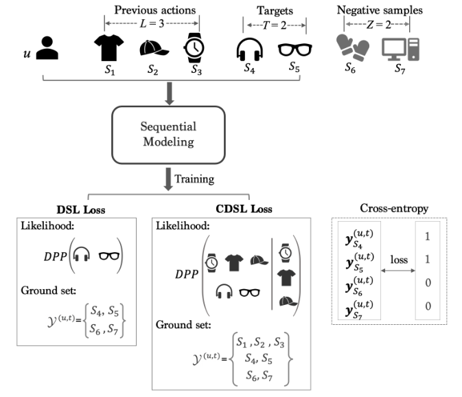

Determinantal Point Process Likelihoods for Sequential Recommendation (序列推荐的行列式点过程似然损失)
- 会议/期刊: SIGIR 2022 (ACM SIGIR, Madrid)
- 作者与机构: Yuli Liu, Christian Walder, Lexing Xie (Australian National University & Data61, CSIRO)
- 推荐链路定位: 精排（训练目标/损失层面，架构无关的即插即用模块）
- 研究方向: 序列与会话推荐 / 列表级与多目标排序
- 论文原文: https://arxiv.org/abs/2204.11562v1
- 开源代码: https://github.com/l-lyl/DPPLikelihoods4SeqRec
TL;DR (1分钟核心速览)
序列推荐长期只在网络架构上做文章，损失一律沿用 pointwise BCE 或 pairwise BPR，而这两类损失把每个 target 当作独立样本比较，既忽略 target 之间的相互依赖，也只优化 relevance、不优化"整个推荐集合被抽中的概率"。本文把 next-item(s) 预测重新表述为从用户序列专属 ground set 中抽取子集的集合选择问题，直接以行列式点过程 (DPP) 集合似然的负对数作损失：DSL（target 集合似然）与 CDSL（以历史项为条件的条件 DPP 似然）。损失中的核矩阵经质量-多样性分解 \(\mathbf{L}=\mathrm{Diag}(\mathbf{R})\,\mathbf{K}\,\mathrm{Diag}(\mathbf{R})\)，使多样性内生进训练目标。在 ML-1M / Anime / Beauty 三数据集、三种 SOTA 基座上直接替换损失即获得显著提升，Beauty 上 Caser 的 Recall@3 提升最高 +37.2%，Anime 上 MARank 的 Recall@3 +39.4%。
Background & Motivation (背景与核心矛盾)
- 主流范式: Caser / MARank / SASRec 等以 CNN、多阶注意力、自注意力建模序列依赖，训练目标统一为二值交叉熵（pointwise）或 BPR（pairwise），损失中每个 target 独立参与比较。
- 前人局限 1（target 依赖缺失）: 当训练目标是预测接下来 \(T>1\)个物品时，BCE 的似然可分解为\(\prod_{i\in\mathcal{D}_t}\sigma(\cdot)\prod_{j\notin\mathcal{D}_t}(1-\sigma(\cdot))\)，即各 target 相互独立，模型只能分别学到\(\{\text{shirt,hat,watch},\text{headphones}\}\)与\(\{\text{shirt,hat,watch},\text{glasses}\}\) 两条序列，无法表达"耳机与眼镜作为同一个配件购买集合共同出现"。
- 前人局限 2（只优化排序、不优化集合）: 排序损失逼迫模型抬高单个物品分数，却从不显式提高"这一组 target 作为整体被选中"的概率，导致 top-N 结果高度同质、用户兴趣窄化。
- 核心洞察 (Key Insight): DPP 给出 \(\mathbb{P}(Y)\propto\det(\mathbf{L}_Y)\)，其中\(\mathbf{L}_{ii}\)是元素\(i\)的边缘包含概率、\(\mathbf{L}_{ii}\mathbf{L}_{jj}-\mathbf{L}_{ij}^2\)是\(i,j\) 共同被选中的概率——相似度越大越难共存（排斥/多样性），天然同时编码"质量"与"多样性"，且行列式边际化可解析计算，不像 MAP 推断那样 NP-hard。
- 本文切入点: 不改网络，只把损失换成 DPP 集合似然的负对数，让"依赖建模 + 多样性"从推理后处理（DPP-MAP）前移到训练目标。

Method (核心方法设计)
1. 整体框架 (Overall Architecture)
流程分两阶段。离线阶段：对每个用户的交互列表用"类别衰减采样"（选中某物品后其所属类别所有物品的被选概率乘以 \(0.5\)）构造类别分散的正样本集合，并采样同类别但未交互的负集合，用\(\log\det\)对比损失预训练一个低秩多样性核\(\mathbf{K}=\mathbf{V}^{\top}\mathbf{V}\)（\(D\ll|\mathcal{Y}|\)）。训练阶段：把序列模型（Caser / MARank / SASRec）对 ground set\(\mathcal{Y}^{(u,t)}\)（\(T\)个 target\(+\,Z\)个负例，CDSL 还含\(L\)个历史项）的打分\(\mathbf{R}\)作为质量项，与\(\mathbf{K}\)组装成序列核\(\mathbf{L}\)，再计算 DSL / CDSL 负对数似然反传。推理阶段不改变任何流程，仍用原模型打分做 Top-N，因此无额外线上开销、也不需 MAP 搜索。
flowchart TD
A["用户历史 L 项 + ground set: T 个 target + Z 个负例"] --> B["序列模型输出打分 → 质量向量 q / Diag(R)"]
P["离线: 类别衰减采样构造正/负多样性集合 → log det 对比学习 K=VᵀV"] --> C
B --> C["序列核 L = Diag(R)·K·Diag(R)"]
C --> D["DSL: −log det(L_YT)/det(L+I)<br/>CDSL: −log det(L_{YL∪T})/det(L+I_YL)"]
D --> E["梯度回传序列模型；推理仍为原打分 Top-N"]2. 关键设计拆解 (Key Designs)
-
DSL：把 target 集合当作一次 DPP 抽样：痛点是的 BCE/BPR 逐 target 独立。做法是直接用 DPP 归一化恒等式 \(\sum_{Y'\subseteq\mathcal{Y}}\det(\mathbf{L}_{Y'})=\det(\mathbf{L}+\mathbf{I})\) 得到目标集合概率 $\(\mathcal{L}_{\text{DSL}}=-\log\mathbb{P}(Y_T)=-\log\frac{\det(\mathbf{L}_{Y_T})}{\det(\mathbf{L}+\mathbf{I})}.\)$ 直觉：\(\det\)展开包含\(\mathbf{L}_{ij}^2\)交叉项，等价于对 target 之间的冗余相似施加惩罚，等价于"整组一起被抽中"的概率最大化。注意\(T=1\)时该损失退化为纯对角项、失去意义，故原文只在\(T>1\) 使用 DSL。
-
CDSL：条件 DPP 补上序列依赖：DSL 只建模 target 间依赖，不建模历史与 target 之间的依赖。CDSL 把 DPP 条件化在已观测历史集 \(Y_L\)上，让整个序列\(Y_{L\cup T}\) 成为一次抽取对象： $\(\mathcal{L}_{\text{CDSL}}=-\log\mathbb{P}(Y_{L\cup T}\mid Y_L)=-\log\frac{\det(\mathbf{L}_{Y_{L\cup T}})}{\det\!\big(\mathbf{L}+\mathbf{I}_{Y_L}\big)},\)$ 其中 \(\mathbf{I}_{Y_L}\)只在 ground set 中未被观测的位置置 1。好处是\(T=1\) 时仍有效（此时只利用序列依赖），且 ground set 变大后核分解更偏向多样性，因此 CDSL 的 category coverage 通常优于 DSL。
-
质量-多样性分解核与训练目标：为把个性化 relevance 注入纯相似度核，采用 \(\mathbf{L}_{ij}=q_i\,\boldsymbol{\phi}_i^{\top}\boldsymbol{\phi}_j\,q_j\)，\(q_i\)即序列模型打分，\(\mathbf{K}=\mathbf{V}^{\top}\mathbf{V}\) 由 $\(\ell_{\text{div}}=\sum_{(T^{(+)},T^{(-)})\in\mathcal{T}}\Big[\log\det(\mathbf{K}_{T^{(+)}})-\log\det(\mathbf{K}_{T^{(-)}})\Big]\)$ 预训练。总损失即上述 DSL/CDSL 负对数似然（对数域即"正集合似然减负集合似然"，等价于一次集合级对比学习，无需 InfoNCE 式大量负采样）；负采样数为 \(Z=2\)（\(T=1\)）或\(Z=T\)（\(T>1\)），历史长度\(L=5\)（\(T=1\)）/\(L=6\)（\(T>1\)）。额外开销主要是\(\mathcal{O}(|Y|^3)\) 的行列式（Cholesky），实测每 epoch 慢约 2 倍，但因收敛更快，总训练时长仅增 0.2%–11%。
Experimental Setup & Evaluation Protocol (实验设置与评估协议)
- 数据集与预处理: 三个公开数据集，均采用
10-core过滤，按时间戳排序构造序列：
| 数据集 | #Users | #Items | #Interactions | 稀疏度/密度 | 特征/场景说明 |
|---|---|---|---|---|---|
| ML-1M | 6.0k | 3.4k | 1.0M | ~4.9% | 电影评分，18 个类别 |
| Anime | 73.5k | 12.2k | 1.0M | ~0.11% | 动漫评分，43 个类别 |
| Beauty | 52.0k | 57.2k | 0.4M | ~0.013% | 亚马逊美妆评论，213 类别、高稀疏 |
- 数据划分与防穿越 (Splitting Strategy): 时间序切分——每个用户最后 \(T\)项作为测试集（\(T\in\{1,2,3,5\}\)），剩余项中前 90% 训练、后 10% 验证（严格按时间戳先后，无穿越）。测试集大小随\(T\) 变化，与训练 target 数保持一致。
- 排名评测协议 (Ranking Protocol): 沿用 Caser/SASRec 基线的默认候选集评估（原文未显式声明 Full-Ranking 全库排序，属采样候选评估口径），\(N\in\{3,5,10\}\)。指标：质量 Recall@N / NDCG@N；多样性 Category Coverage（top-N 覆盖类别数 / 数据集总类别数）；权衡\(F@N=2\cdot q\cdot d/(q+d)\)，\(q\)为 Re 与 Nd 的均值、\(d\) 为 CC。
- 对比基线与超参设置: 三个代表基座各自保留原损失（Caser+BCE、MARank+BPR、SASRec+BCE）作为对照，仅替换损失、其余网络结构与默认超参不动，保证对比只反映损失差异；早停策略为验证集 NDCG@5 连续 10 epoch 不升；显著性以相对提升 \(>5\%/*\)、\(>10\%/**\)、\(>20\%/***\) 标注。
Key Experimental Results (实验关键数据)
1. 主实验对比 (Main Results)
（下表为原文表 2–4 的代表性切片；同一基座下 DSL/CDSL 仅替换损失，加粗为该行最优，括号为相对同基座原损失的提升）
| 数据集 (T) | 基座 + 损失 | Re@3 | Re@10 | Nd@10 | CC@5 | F@10 |
|---|---|---|---|---|---|---|
| Beauty (T=1) | SASRec + BCE | 0.0873 | 0.2079 | 0.1086 | 0.0527 | 0.1047 |
| Beauty (T=1) | SASRec + CDSL | 0.1032 (+18.2%) | 0.2286 | 0.1239 (+14.1%) | 0.0507 | 0.1081 |
| Beauty (T=3) | Caser + BCE | 0.0414 | 0.0975 | 0.1035 | 0.0662 | 0.0999 |
| Beauty (T=3) | Caser + DSL | 0.0568 (+37.2%) | 0.1388 | 0.1420 (+37.2%) | 0.0668 | 0.1216 (+21.7%) |
| Beauty (T=3) | Caser + CDSL | 0.0496 (+19.8%) | 0.1289 | 0.1260 | 0.0657 | 0.1166 |
| Beauty (T=5) | Caser + BCE | 0.0434 | 0.1219 | 0.1758 | 0.0637 | 0.1219 |
| Beauty (T=5) | Caser + CDSL | 0.0554 (+27.6%) | 0.1430 | 0.1954 (+11.2%) | 0.0640 | 0.1297 |
| Anime (T=3) | MARank + BPR | 0.1346 | 0.2616 | 0.3361 | 0.3381 | 0.3618 |
| Anime (T=3) | MARank + DSL | 0.1876 (+39.4%) | 0.3826 (+46.3%) | 0.4487 (+33.5%) | 0.3327 | 0.4353 |
| Anime (T=3) | MARank + CDSL | 0.1738 (+29.1%) | 0.3591 | 0.4264 | 0.3320 | 0.4202 |
| ML-1M (T=3) | Caser + BCE | 0.0506 | 0.1313 | 0.1634 | 0.3498 | 0.2281 |
| ML-1M (T=3) | Caser + CDSL | 0.0561 (+10.9%) | 0.1329 | 0.1718 | 0.3570 | 0.2348 |
2. 消融实验 (Ablation Study)
原文无传统 w/o module 消融，其"依赖建模粒度"扫描等价于逐项加回组件（\(T\) 同时作为敏感度维度），下表取 Caser / Anime 与 Caser / Beauty 的 NDCG@10 / F@10：
| 依赖建模粒度 | Beauty T=1 | Beauty T=3 | Beauty T=5 | Anime T=3 |
|---|---|---|---|---|
| 无依赖（BCE 原损失） | 0.0806 / 0.1080 | 0.1035 / 0.0999 | 0.1758 / 0.1219 | 0.4144 / 0.4225 |
| + target 依赖（DSL） | 不适用 | 0.1420 / 0.1216 | 0.1822 / 0.1226 | 0.4397 / 0.4445 |
| + target & 序列依赖（CDSL） | 0.1029 / 0.1198 | 0.1260 / 0.1166 | 0.1954 / 0.1297 | 0.4589 / 0.4522 |
3. 关键实验发现 (Key Findings)
- 瓶颈在损失而非容量：Beauty / T=3 上仅把 BCE 换成 DSL（网络完全不动），Re@3 从 0.0414 升到 0.0568（+37.2%），说明 BCE 的"target 独立"假设本身压制了序列推荐；增益幅度远超同期架构改进，且对 CNN（Caser）、多阶注意力（MARank）、自注意力（SASRec）三类骨干一致成立。
- 两种依赖互补、且 CDSL 更普适：\(T=1\)时 DSL 不可用而 CDSL 仍把 Beauty/SASRec 的 Re@3 抬高 18.2%，证明序列依赖是更基础的一层；\(T>1\)时叠加 target 依赖进一步获益，但\(T=5\)时 target 间噪声/混淆依赖使 DSL 增益衰减（Beauty T=5 Nd@10 仅 +3.6%，而 CDSL +11.2%），\(T=3\) 是甜点。CDSL 因 ground set 扩大使核分解更偏向多样性，CC 通常更优（Anime T=3 Caser CC@5 0.3463→0.3539）；个别案例（ML-1M/Anime T=3 的 SASRec、Beauty T=3 的 MARank F@10）基座仍略优，属少数。
- "慢一点、快收敛"的效率账：MARank / Anime T=3 上 CDSL 每 epoch 55.15s（基线 25.37s，2.2×），但收敛 epoch 由 38 降到 19，总时长仅 +8.7%；Beauty T=3 总时长 +11.2%、\(T=1\) 仅 +6.0%；且提出损失在更低学习率（0.0005）下表现更好、更早触发早停，说明集合似然的梯度更"稳"。
Highlights & Limitations (亮点、对比与审稿批判)
- 与代表作对比 (vs. Prior Work): ① 与 DPP-MAP 后处理多样化（Chen et al., SIGIR'18 一类）本质不同——把 NP-hard 的推理期 MAP 换成可解析、可求导的训练期似然；② 与 Caser [39] / SASRec [22] 正交——不改网络，只换目标，因此可直接叠在更强的骨干上；③ 与 listwise ranking 不同，listwise 依赖排序位置与置换概率，在二值 relevance 的推荐场景不可用，而 DPP 只需集合级的行列式，复杂度可控。
- 可迁移亮点: \(\mathbf{L}=\mathrm{Diag}(\mathbf{R})\mathbf{K}\mathrm{Diag}(\mathbf{R})\)的"模型打分作质量项 + 预训练低秩核作多样性项"是一个通用插件，可直接套到重排、basket 推荐、多目标精排的列表级损失上；\(\log\det\) 正负集合对比也是免 InfoNCE 温度超参的集合级对比范式。
- 审稿级局限批判: ① 评测口径不清——原文未明确是 Full-Ranking 还是采样候选排序，与近年无偏全库评测潮流不可比，CC 指标也强依赖人工类目体系；② 元数据依赖与复杂度——多样性核须靠"类别衰减采样"弱监督构造，无类目/冷启物品场景不可用，且 \(\det(\mathbf{L}+\mathbf{I})\)的\(\mathcal{O}(|Y|^3)\)开销随\(T+Z\)增长，\(T\)大时（\(T=5\) 已见噪声依赖）不划算；③ 实验止步 3 个经典数据集、无线上 A/B、无方差/显著性检验，仅用百分比阈值标注。
Rating (四维评分)
- 方法创新性 (Novelty): ⭐⭐⭐⭐ （把 DPP 从"推理期多样化后处理"翻转为"训练期集合似然损失"，视角新；但 DPP 与质量-多样性分解均为既有理论，增量在于条件化与损失化）
- 评估协议与实验扎实度 (Protocol & Experiments): ⭐⭐⭐ （三骨干 × 四档 \(T\) 的交叉验证相当完整，但划分/打分口径交代不清、缺显著性检验与无偏全库排序）
- 写作与数学规范度 (Clarity & Rigor): ⭐⭐⭐⭐ （DSL/CDSL 由归一化恒等式到条件 DPP 的推导链条干净，符号统一；推理与训练复杂度的讨论略简）
- 工业落地与复现价值 (Industrial & Practical Value): ⭐⭐⭐ （代码开源、损失即插即用、线上零额外推理开销是真优势；但依赖类目元数据与每 epoch 约 2× 的行列式训练开销，限制了超大物品集场景）